# 先验参数
n <- m <- 50
mu <- 10
delta <- 1
sigma <- 2
# 模拟数据
y1 <- rnorm(n,mu,sigma)
y2 <- rnorm(m,mu+delta,sigma)
y <- c(y1,y2)
# Gibbs
set.seed(2024)
S<-1000
PHI<-matrix(nrow=S,ncol=3)
PHI[1,]<-phi<-c(0, 0, 4) # sigma2
## Gibbs sampling algorithm
for(s in 2:S) {
# generate a new mu value from its full conditional
mu_n<- n*100*100*mean(y1)/(4+n*100*100)
s2_n<- (100*100*4)/(4+n*100*100)
phi[1]<-rnorm(1, mu_n, sqrt(s2_n) )
# generate a new delta value from its full conditional
delta_m<- ( m*100*100*mean(y2)/(4+m*100*100))-( n*100*100*mean(y1)/(4+n*100*100))
s2_m<- (100*100*4)/(4+m*100*100)
phi[2]<-rnorm(1, delta_m, sqrt(s2_m) )
# generate a new sigma^2 value from its full conditional
a <- 0.01+(m+n)*0.5
b <-0.01+(m+n)*0.5*((sum((y-mean(y))^2)/(m+n))+((mean(y)-(n*mu+m*(mu+delta))/(m+n))^2))
phi[3]<- 1/rgamma(1, a, b)
PHI[s,]<-phi }bayesian hw 3
chapter 3
第一题

a
临床试验的例子，
安慰剂服从\(Y～N(\mu,\sigma^2) ,i=1,..,n\) ,
实验药服从\(N～N(\mu + \delta,\sigma^2),i=1+n,..,n+m\)
b
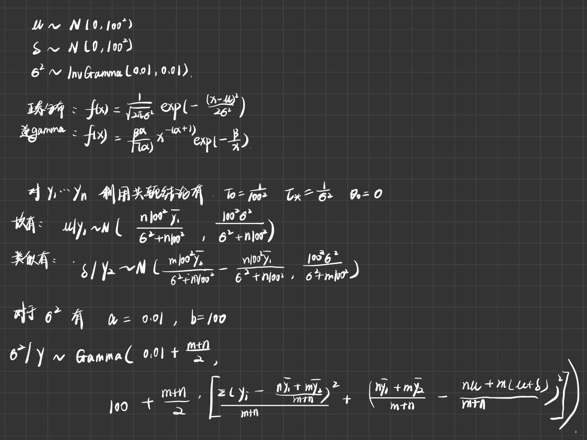
c
plot(density(PHI[,1]),main='mu')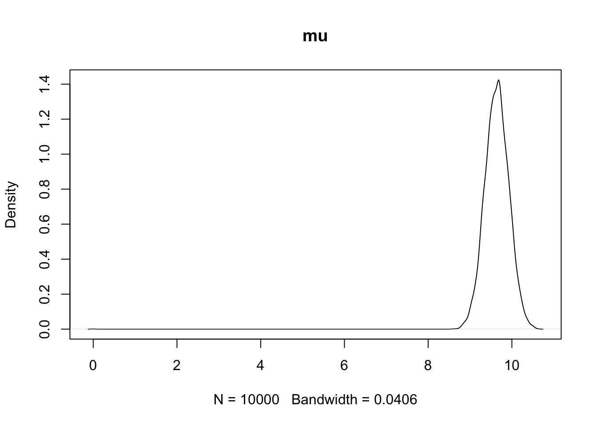
plot(density(PHI[,2]),main='delta')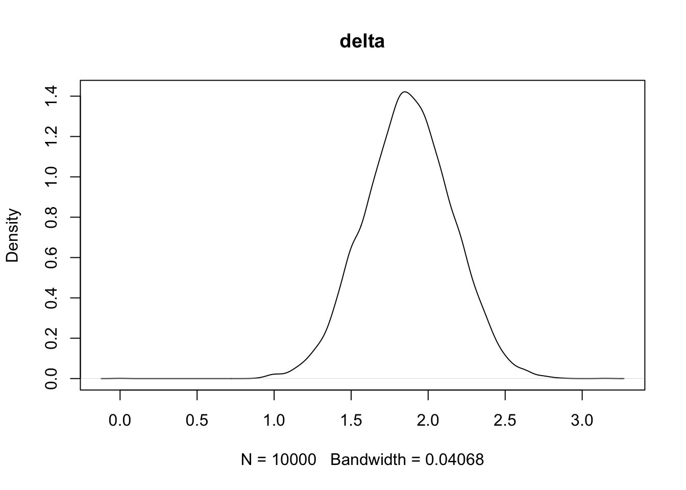
plot(density(PHI[,3]),main='sigma2')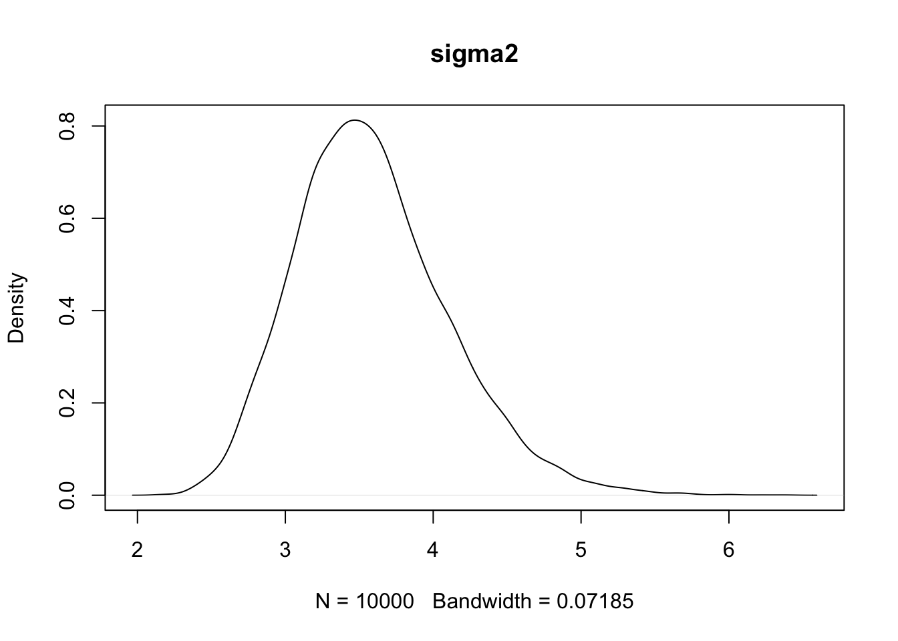
d
library('rjags')Loading required package: codaLinked to JAGS 4.3.2Loaded modules: basemod,bugslibrary("coda")
model_code <- "
model {
for (i in 1:n) {
Y[i] ~ dnorm(mu, 1/sigma2)
}
for (i in (n+1):(n+m)) {
Y[i] ~ dnorm(mu + delta, 1/sigma2)
}
mu ~ dnorm(0, 1/10000)
delta ~ dnorm(0, 1/10000)
tau ~ dgamma(0.01, 0.01)
sigma2 = 1/tau
}
"
n <- 50
m <- 50
mu_n <- 10
delta <- 1
sigma <- 2
set.seed(2024)
Y <- c(rnorm(n, mu_n, sigma), rnorm(m, mu_n + delta, sigma))
data_list <- list(Y = Y, n = n, m = m)
model <- jags.model(textConnection(model_code), data = data_list, n.chains = 3, n.adapt = 1000)Compiling model graph
Resolving undeclared variables
Allocating nodes
Graph information:
Observed stochastic nodes: 100
Unobserved stochastic nodes: 3
Total graph size: 113
Initializing model# 运行 MCMC 采样
update(model, 1000) # Burn-in阶段
samples <- coda.samples(model, variable.names = c("mu", "delta", "sigma2"), n.iter = 5000)
plot(samples)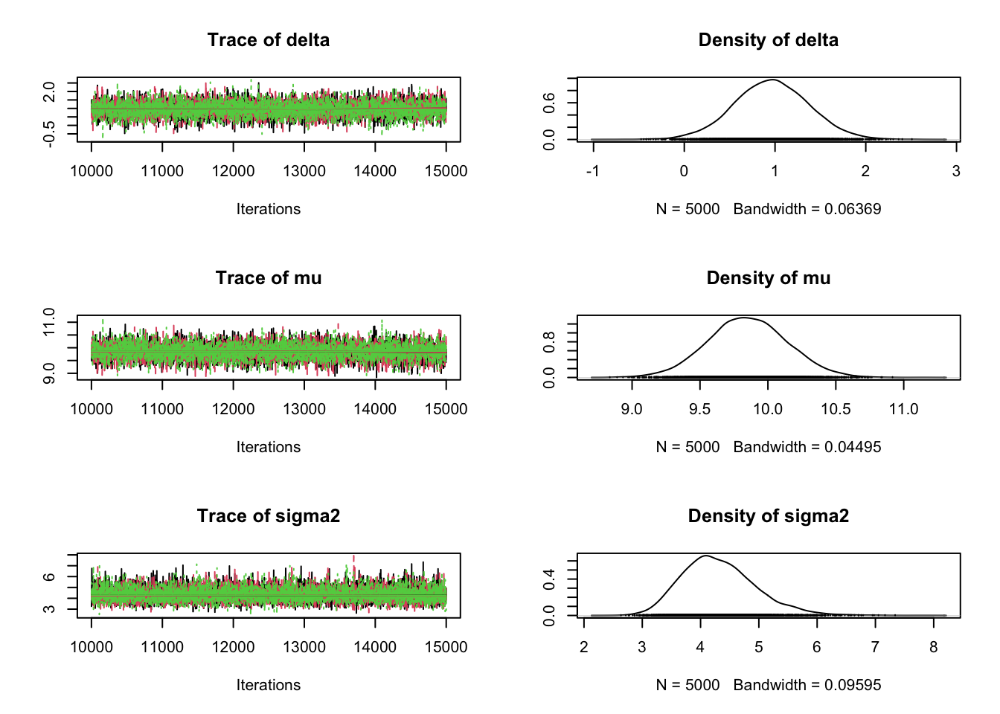
e
gelman.diag(samples)Potential scale reduction factors:
Point est. Upper C.I.
delta 1 1
mu 1 1
sigma2 1 1
Multivariate psrf
1# 自相关
acf(as.matrix(samples)[, "mu"])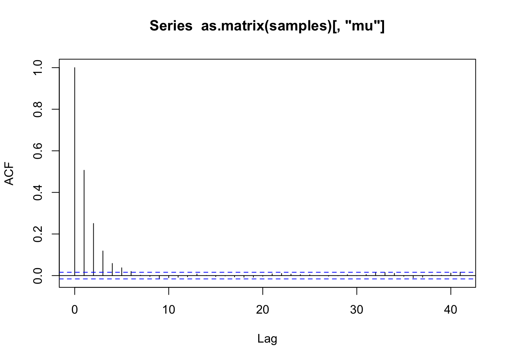
acf(as.matrix(samples)[, "delta"])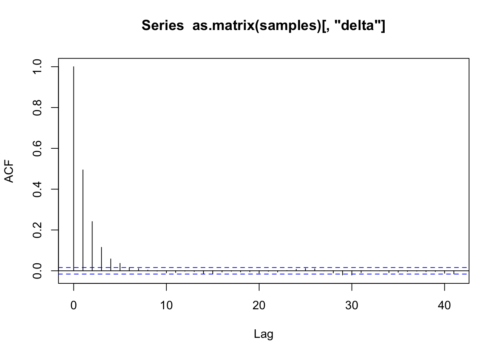
acf(as.matrix(samples)[, "sigma2"])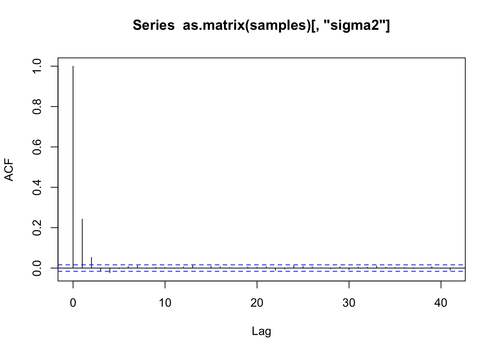
# 有效样本量
effectiveSize(samples) delta mu sigma2
5128.764 5055.603 8764.290 第二题
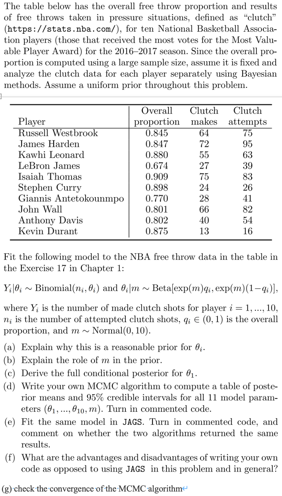
a
beta分布对于概率\(\theta\)来说是常规的先验分布设置手段。因为其足够灵活并且在0，1之间变化; 其次，这样设置还有现实意义的解释，即beta分布中，a=命中多少个，b=未能命中的个数; 最后，添加了一个exp(m)这样一个调节的量，表示在常规命中率的基础上引入变化
set.seed(2024)
theta_i <- c(0.845, 0.847, 0.880, 0.674, 0.909, 0.898, 0.770, 0.801, 0.802, 0.875)
m_samples <- rnorm(1000, mean = 0, sd = 10)
probabilities <- numeric(10000)
for (i in 1:1000) {
m <- m_samples[i]
for (j in 1:10) {
shape1 <- exp(m) * theta_i[j]
shape2 <- exp(m) * (1 - theta_i[j])
probability <- rbeta(1, shape1, shape2)
probabilities[(i - 1) * 10 + j] <- probability
}
}
hist(probabilities,probability = TRUE)
lines(density(probabilities), col = "red", lwd = 2) 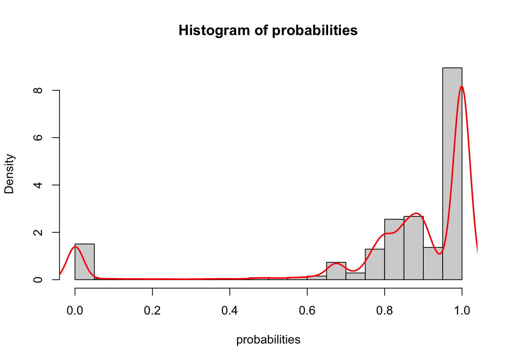
b
m引入了不确定性
c
后验： $$
beta(y+exp(m)q_{i} , exp(m)(1-q_i)+n-y)
$$
d
theta_i <- c(0.845, 0.847, 0.880, 0.674, 0.909, 0.898, 0.770, 0.801, 0.802, 0.875)
clutch_makes <- c(64, 72, 55, 27, 75, 24, 28, 66, 40, 13)
clutch_attempts <- c(75, 95, 63, 39, 83, 26, 41, 82, 54, 16)
n_players <- length(theta_i)
set.seed(2024)
S<-1000000
THETA<-matrix(nrow=S,ncol=11)
THETA[1,]<-theta<-c(0,rep(0.8,10)) # theta
for(s in 2:S) {
theta[1]<- m <- rnorm(1, 0, sqrt(10))
for(i in 1:10){
theta[i+1] <- rbeta(1,
clutch_makes[i]+exp(m)*theta_i[i],
exp(m)*(1-theta_i[i])+clutch_attempts[i]-clutch_makes[i])
}
THETA[s,]<-theta }
colnames(THETA) <- c('m',paste0('theta',1:10))
m <- apply(THETA,2,function(x){
quantile(x,0.5)
})
l <- apply(THETA,2,function(x){
quantile(x,0.025)
})
h <- apply(THETA,2,function(x){
quantile(x,0.975)
})
t(rbind(l,m,h)) l m h
m -6.1908236 0.001690084 6.2067146
theta1 0.7694963 0.854152849 0.9206071
theta2 0.6741323 0.768909606 0.8476116
theta3 0.7863799 0.877737520 0.9402216
theta4 0.5491007 0.689603429 0.8171368
theta5 0.8359270 0.907343843 0.9552716
theta6 0.8051724 0.924314204 0.9876626
theta7 0.5476745 0.702025546 0.8137787
theta8 0.7169512 0.805951434 0.8797382
theta9 0.6270672 0.754245031 0.8463356
theta10 0.6228891 0.843445009 0.9521655e
library(rjags)
library(coda)
model_string <- "
model {
for (i in 1:n_players) {
clutch_makes[i] ~ dbin(theta[i], clutch_attempts[i])
theta[i] ~ dbeta(alpha[i], beta[i])
alpha[i] <- exp(m[i]) * theta_i[i]
beta[i] <- exp(m[i]) * (1 - theta_i[i])
}
}
"
theta_i <- c(0.845, 0.847, 0.880, 0.674, 0.909, 0.898, 0.770, 0.801, 0.802, 0.875)
clutch_makes <- c(64, 72, 55, 27, 75, 24, 28, 66, 40, 13)
clutch_attempts <- c(75, 95, 63, 39, 83, 26, 41, 82, 54, 16)
n_players <- length(theta_i)
m <- rnorm(n_players*10,0,sqrt(10))
data_jags <- list(
theta_i = theta_i,
clutch_makes = clutch_makes,
clutch_attempts = clutch_attempts,
n_players = n_players,
m=m
)
model <- jags.model(textConnection(model_string), data = data_jags, n.chains = 3)Compiling model graph
Resolving undeclared variables
Allocating nodes
Graph information:
Observed stochastic nodes: 10
Unobserved stochastic nodes: 10
Total graph size: 182
Initializing modelupdate(model, 10000)
n_samples <- 10000
samples <- coda.samples(model, variable.names = c('theta'), n.iter = n_samples)
plot(samples)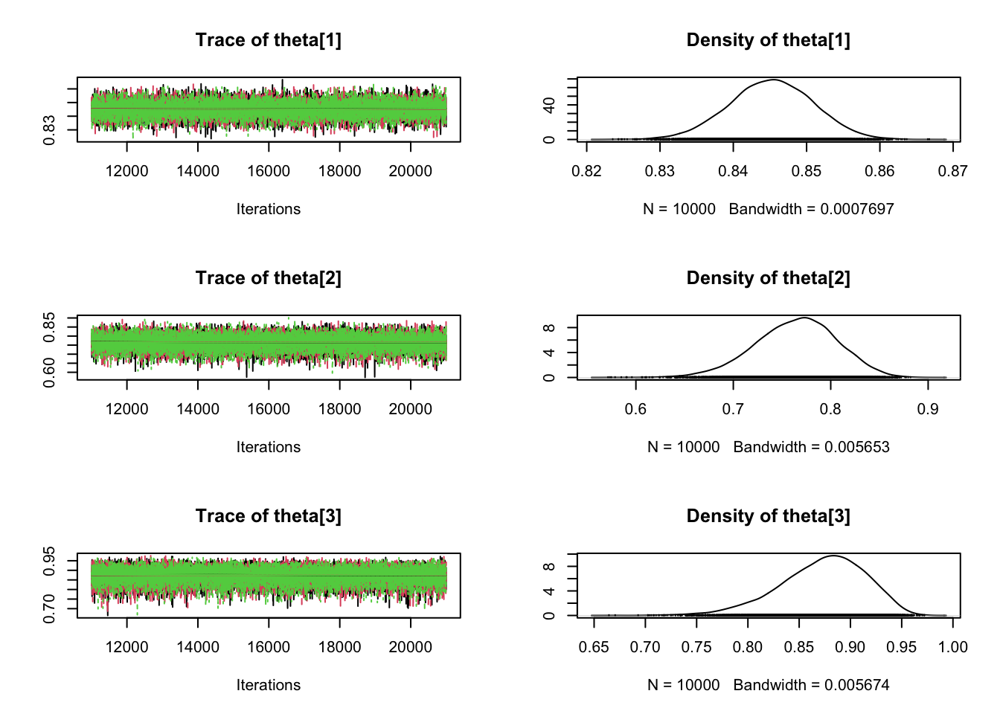
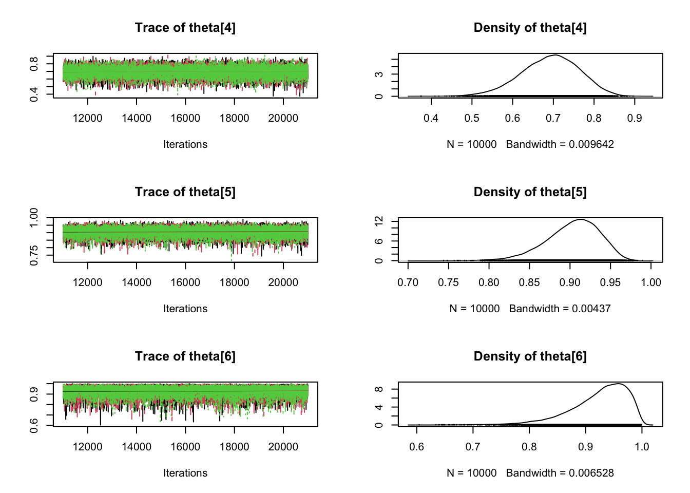
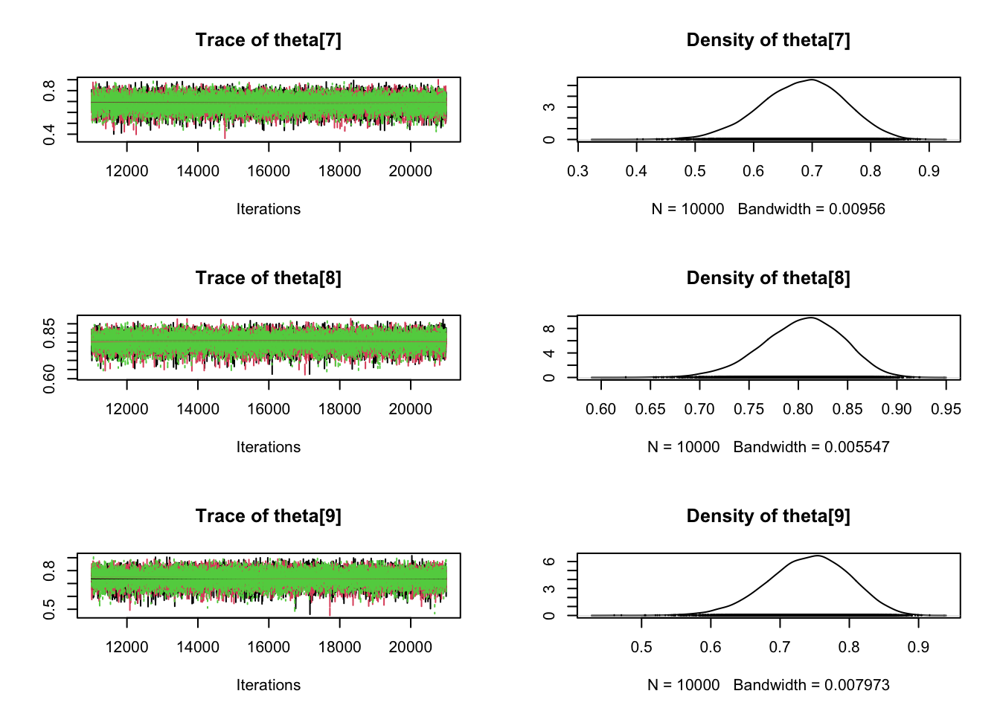
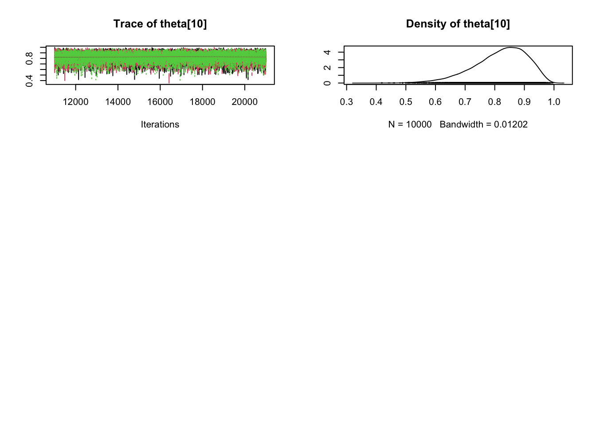
summary(samples)
Iterations = 11001:21000
Thinning interval = 1
Number of chains = 3
Sample size per chain = 10000
1. Empirical mean and standard deviation for each variable,
plus standard error of the mean:
Mean SD Naive SE Time-series SE
theta[1] 0.8535 0.04051 0.0002339 0.0003160
theta[2] 0.7615 0.04278 0.0002470 0.0003085
theta[3] 0.8733 0.04152 0.0002397 0.0003130
theta[4] 0.6915 0.07111 0.0004106 0.0005305
theta[5] 0.9034 0.03213 0.0001855 0.0002524
theta[6] 0.9226 0.05102 0.0002946 0.0004932
theta[7] 0.7322 0.04522 0.0002611 0.0003317
theta[8] 0.8048 0.04271 0.0002466 0.0003280
theta[9] 0.7403 0.05888 0.0003399 0.0004356
theta[10] 0.8186 0.08984 0.0005187 0.0007585
2. Quantiles for each variable:
2.5% 25% 50% 75% 97.5%
theta[1] 0.7657 0.8283 0.8564 0.8824 0.9230
theta[2] 0.6734 0.7333 0.7629 0.7914 0.8410
theta[3] 0.7815 0.8477 0.8774 0.9031 0.9426
theta[4] 0.5447 0.6451 0.6951 0.7418 0.8207
theta[5] 0.8317 0.8838 0.9068 0.9267 0.9560
theta[6] 0.7962 0.8953 0.9329 0.9609 0.9897
theta[7] 0.6395 0.7027 0.7338 0.7637 0.8165
theta[8] 0.7157 0.7770 0.8073 0.8351 0.8808
theta[9] 0.6156 0.7023 0.7431 0.7816 0.8471
theta[10] 0.6110 0.7646 0.8310 0.8864 0.9560f
自己的代码需要推导后验分布
g
gelman.diag(samples)Potential scale reduction factors:
Point est. Upper C.I.
theta[1] 1 1
theta[2] 1 1
theta[3] 1 1
theta[4] 1 1
theta[5] 1 1
theta[6] 1 1
theta[7] 1 1
theta[8] 1 1
theta[9] 1 1
theta[10] 1 1
Multivariate psrf
1effectiveSize(samples) theta[1] theta[2] theta[3] theta[4] theta[5] theta[6] theta[7] theta[8]
16463.24 19231.86 17606.27 18021.70 16214.02 10750.57 18628.96 17131.60
theta[9] theta[10]
18289.19 14186.49 第三题

a
library(MASS)
data(galaxies)
?galaxies
Y <- galaxies
n <- length(Y)
hist(Y,breaks=25)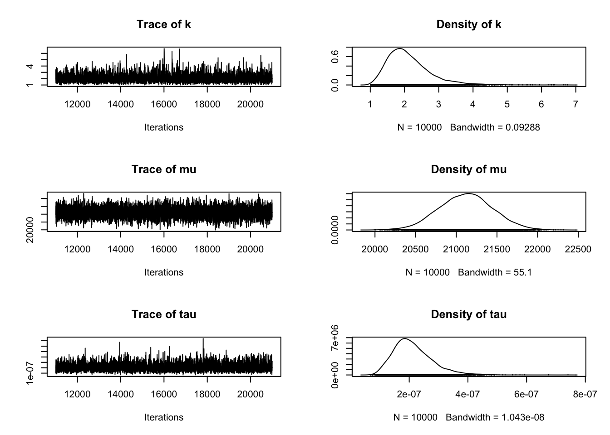
\(\mu=20000\)
\(\sigma=5000\)
\(k=15\)
b
library(rjags)
library(coda)
model_string <- "
model {
for (i in 1:s) {
Y[i] ~ dt(mu, tau, k)
}
mu ~ dnorm(0, 1/10000^2)
tau ~ dgamma(0.01, 0.01)
k ~ dunif(1, 30)
}
"
data_jags <- list(Y =galaxies, s = length(galaxies))
# 设置初始值
init_values <- list(
list(mu = 0, tau = 100, k = 15)
)
# 创建模型
model <- jags.model(textConnection(model_string), data = data_jags, inits = init_values, n.chains = 1)Compiling model graph
Resolving undeclared variables
Allocating nodes
Graph information:
Observed stochastic nodes: 82
Unobserved stochastic nodes: 3
Total graph size: 94
Initializing model# 更新模型
update(model, 10000)
# 采样
n_samples <- 10000
samples <- coda.samples(model, variable.names = c("mu", "tau", "k"), n.iter = n_samples)
# 绘制轨迹图
plot(samples)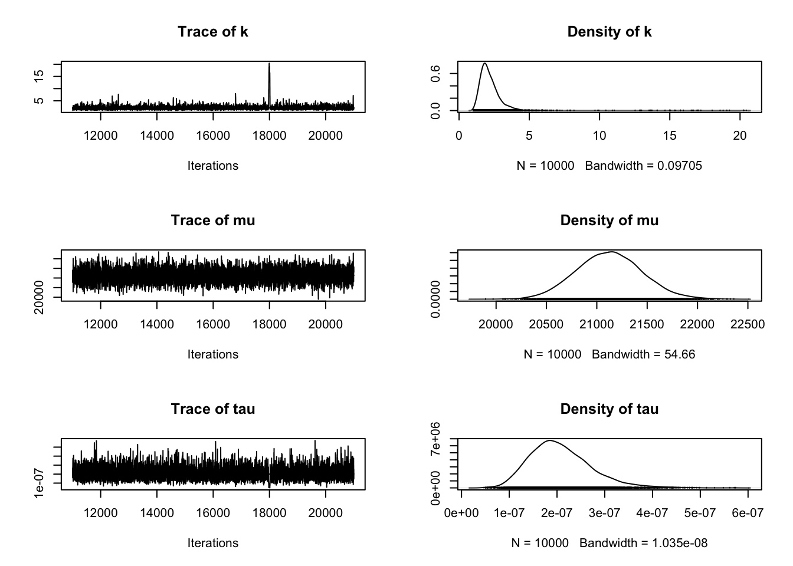
c
posterior_means <- apply(as.matrix(samples), 2, mean)
# 从后验均值计算t分布
mu_posterior <- posterior_means["mu"]
sigma_posterior <- 1/sqrt(posterior_means["tau"])
k_posterior <- posterior_means["k"]
# 生成t分布的随机样本
t_dist_samples <- rt(10000, df = k_posterior, ncp = mu_posterior)
# 绘制观察数据和t分布的对比图
hist(galaxies, probability = TRUE, col = rgb(0, 0, 1, 0.5), main = "Comparison of Data and t-distribution", xlim = c(min(galaxies), max(galaxies)))
lines(density(t_dist_samples), col = "red", lwd = 2,xlim=c(10000,35000))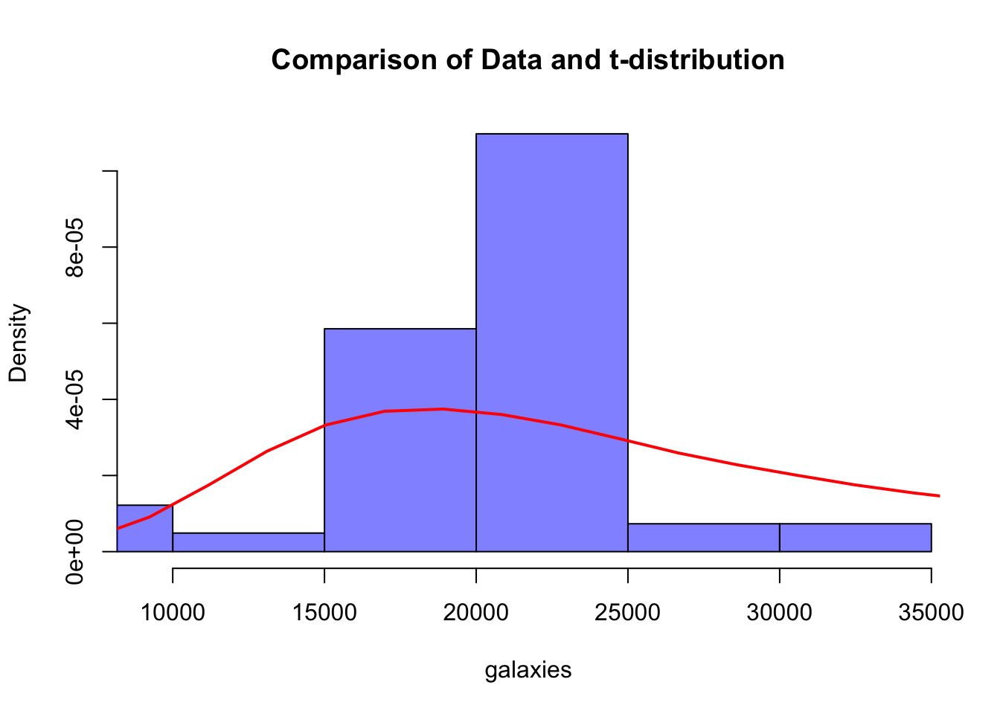